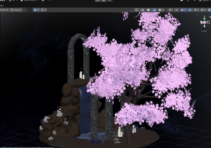
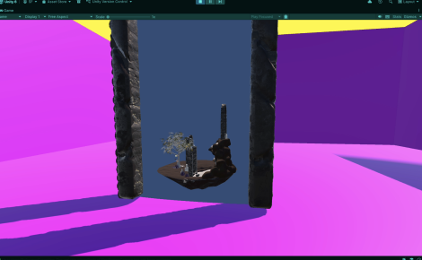

3D · Shader programming · Group project
A custom Unity portal that renders a live, perspective-correct view between two student-built worlds.
Role
Technical lead, portal system
Status
Completed
Engine
Unity
Stack
HLSL · Render Textures · C#

My partner built a cherry-blossom tree and an island. I owned the portal system and the visual integration between them.
The portal maintains parallax as the player moves, renders the destination from the player's perspective, and transfers the player through the plane without a visible break.
A second camera in the destination world mirrors the player's position relative to the portal. Its output is rendered onto the portal surface every frame.
Dual-camera system
A second camera mathematically replicates the player's movement relative to the far portal, so the view through it is always perspective-true.
Render texture pipeline
The mirrored camera streams onto the portal surface as a live render texture.
Hand-tuned HLSL
The stock projection clipped the island's edges; I rewrote the shader so the full island reads through the portal from every angle.
Seamless teleport
Crossing the portal plane moves the player into the destination world and disables the source portal behind them.

What it proved
The completed mechanic combines camera transforms, render textures, HLSL, and player transfer in one portal system.